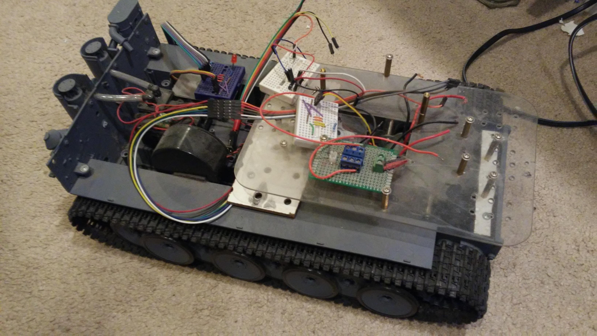
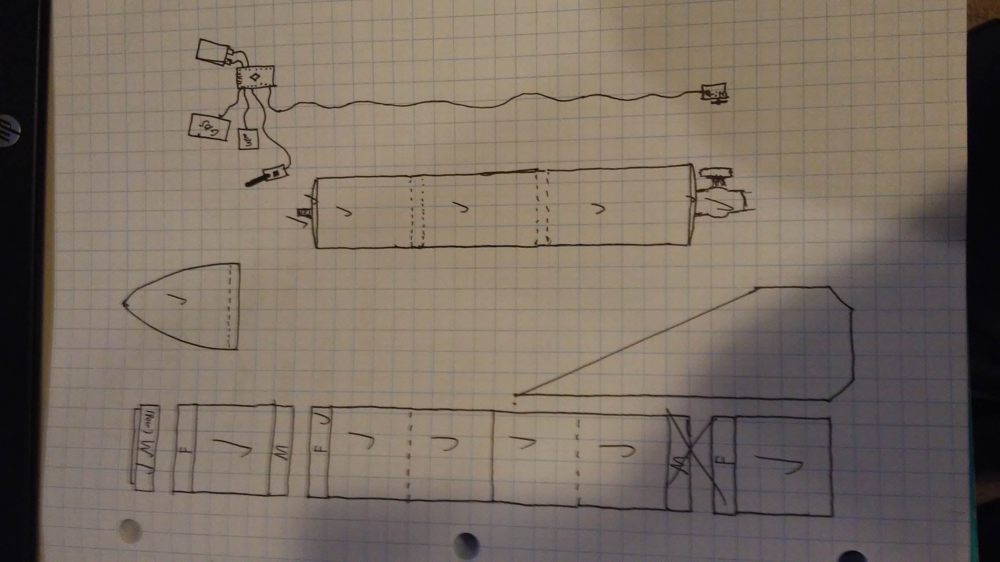
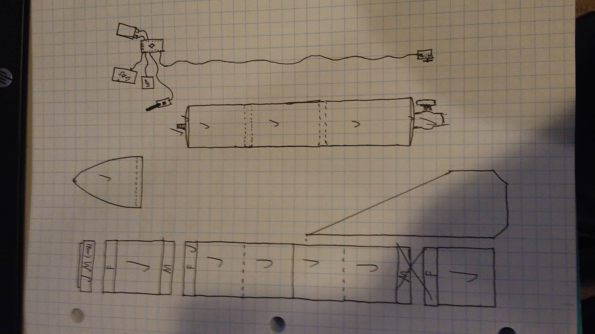

Thanics
.jpg)
Thanics is a company I co-founded along with...
Summer Research
Over the summer, I worked with a professor from the Naval Academy on...
Rocket

Sophomore year of High School, I was given a project in Science class...
Science Fair

Sophomore year of High School, a group of friends and I competed in...
Robotics Club

Both Freshman and Sophomore years of High School, I participated in...
Arduino Projects
Over the years I have done many small projects, many involving Arduinos...
Example Work
Example school projects
Rocket
 

In tenth grade, my science teacher assigned our class to create two small rockets; one powered by compressed air and one powered by an acid-base reaction. My partner and I decided to combine the two, and create one rocket capable of being propelled by either method. We also decided to go big, with the final rocket standing almost 4-feet tall (as opposed to the upside-down water bottles many of my classmates created). In order to propel such a large rocket, we decided it would need to be at a high pressure (our estimates were a couple hundred psi), and the rocket would need to remain light. To do this, we decided to create a 3-foot tall, carbon fiber pressure tank as the centerpiece of the rocket. Carbon fiber met all the criteria were looking for; it was lightweight, high strength, and could be bought on Amazon. Neither of us knew how to fabricate something out of carbon fiber, so I volunteered to learn. Our first step was to design the pressure tank and housing, which we did in Autocad Inventor, and ran structural analysis to verify that our pressure tank design could theoretically hold 600psi before undergoing a RUD (rapid unscheduled disassembly). The next steps were to 3d-print the outer casing and pressure tank mold, which we distributed across several printers at our school and our houses (I forgot to mention, we were on a strict time schedule. Ever hour of production was planned, and we barely got everything printed in time.) After buying supplies off Amazon, and watching youtube videos about carbon fiber, I set to work making the pressure tank. Using a hand layup and skinning process, I wrapped a 3d-printed shell in several layers of carbon fiber to create the pressure tank. I remember I put on the last coat of epoxy with the exact number of hours before the project as was needed to cure the epoxy. After working late into the night and early into the morning each day on the project, anticipation was high when we went to test it for the teacher. We set up the rocket, pumped it with air, and fsssssss.... Turns out, carbon fiber is, well, a fiber. And, fibers, like fabrics, are porous. So, as we filled the tank, the air simply leaked out through the carbon fiber skin. For a couple weeks after the first test, I tried putting on more layers of epoxy to seal the holes, but was unsuccessful. The moral of the story is, although we were not successful at launching a rocket, we tried things far beyond the requirements, and learned technologies like CAD structural analysis and high-performance composite fabrication that we would not have learned had we taken the easy road.
Science Fair

Sophomore year of High School, a group of friends and I competed in Science Fair. In the cover image, I am on the left, one of my partners from the project is on the right, and one in the center is another friend of mine who also won awards at the regional fair, and then went on to the Intel international science fair (all three of us are the founders of Thanics). My group's science fair was on the impact on propeller pitch on quadcopter performance, specificaly finding the relationship between the ideal propeller pitch and weight of the quadcopter. We were able to directly apply our findings to designing the propellers on Halo, our company's quadcopter in development.
Robotics

Both Freshman and Sophomore years of High School, I participated in my school's FTC robotics team; sophomore year as a team captain. Freshman year, I worked on our robot's autonomous code, and was able to develop a program that would use an IR sensor array to track an IR emitter. The code would then line up the robot in front of a 3-foot high goal, the robot would autonomously raise its arm, and then deposit a ball into the goal. Sophomore year, I was assigned a team captain, so I spent the year bouncing around to different stations. Our robotics organization consists of 3 FTC teams, and one FRC team. The larger FRC team has a dedicated design group that CAD models the robot before fabrication, and is thus able to work through bugs in the design ahead of time and be more efficient with fabrication. I noticed this, so I implemented a similar group in my FTC team, and we were the first FTC team at our school to do so; other teams have since followed suit. We did run into many problems with timing and practicality, but I would say it was overall a success.
Arduino Projects

Over the years I have done many small projects, many involving Arduinos. My first real robotics project was with a small arduino-controlled treaded rover back in the summer before 6th grade. Since then, I have done many small project, ranging from small treaded rovers to larger treaded rovers, and from ultrasonic rulers and and lcd screen in a box to remote LIDAR mapping drones and PID (Proportional Integral Derivative feedback control) testing frames.
School Work Examples

Quick examples of school work. I am working on a future feature that would allow viewers to download files from the server, but I am still working on making a proper backend database to serve the information.